Manual de Usuario SOLAINO — Espere que carguen los diagramas, luego Ctrl+P → Guardar como PDF.
Manual de Usuario
Módulo Bodega — Guía por rol
Diseñadora · Programadora maquinaria · Operador taller · Supervisor (encargado)
SOLAINO — Inventario y producción
Versión 1.0 — Mayo 2026
Índice
1. Introducción y acceso
Este manual está dirigido al personal operativo del módulo Bodega de SOLAINO. Cada capítulo corresponde a un rol de usuario. Si su cuenta tiene un solo rol, puede ir directamente a su sección; si tiene dudas sobre qué ve en pantalla, consulte la matriz de permisos al final.
1.1 Roles cubiertos
Rol en el sistema
Nombre en pantalla
Enfoque principal
disenadora
Diseñadora (Bodega)
Diseño CAD, entregas ZIP, planos, histórico de diseño, tiempos
programadora_maquinaria
Programadora maquinaria
Programación CNC, asignación de piezas, maquinado y taller
operador_bodega
Operador taller
Perfilado, armado y detallado en Taller; cola de prioridades
Nota: El rol Usuario (inventario) y el Administrador tienen manuales aparte. Este documento no cubre el módulo de Inventario ni la gestión de usuarios.
1.2 Inicio de sesión
Todos los roles acceden con correo y contraseña asignados por el administrador. Si olvidó su clave, solicite recuperación; un administrador la restablecerá desde el panel de Usuarios.
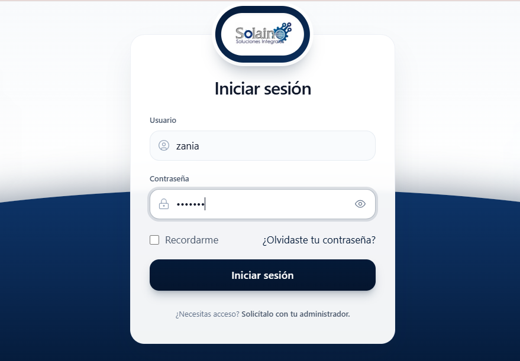
Fig. 1.1 — Pantalla de acceso a SOLAINO
1.3 Menú Bodega
Tras iniciar sesión, el menú superior muestra Bodega con las vistas permitidas para su rol. Use el botón de despliegue para ver Proyectos, Prioridades, Plan de trabajo, Nube, Reportes, Histórico (si aplica), Maquinado y Taller.
Fig. 1.2 — Opciones del menú Bodega (varían según rol)
1.4 Vista general del flujo
flowchart LR
OC[Orden de compra] --> DIS[Diseño]
DIS --> REV[Revisión supervisor]
REV --> PROG[Programación CNC]
PROG --> MAQ[Maquinado]
MAQ --> TAL[Taller: perfilado / armado / detallado]
TAL --> FOT[Fotos y cierre]
El proyecto avanza por etapas. Cada rol trabaja en su tramo; las notificaciones (campana) avisan cuando cambia la prioridad de un proyecto.
2. Diagrama de flujo del proceso
El siguiente diagrama oficial resume el recorrido de un proyecto desde la orden de compra hasta el cierre. Consulte la leyenda de colores en la primera lámina.
Fig. 2.1 — Portada del diagrama y leyenda de etapas
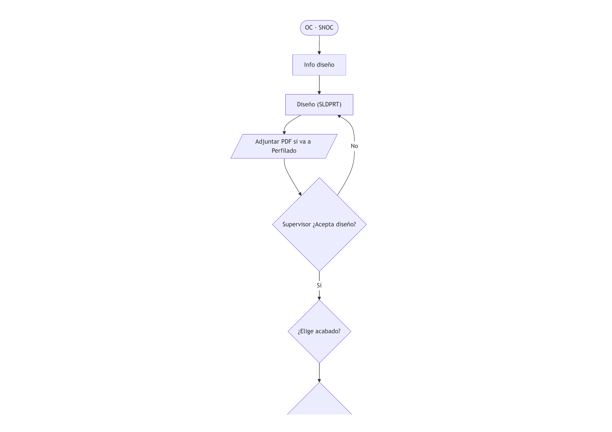
Fig. 2.2 — Diseño, entregas y revisión del supervisor
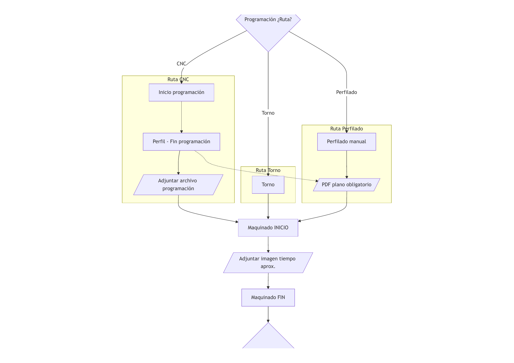
Fig. 2.3 — Programación, asignación y maquinado
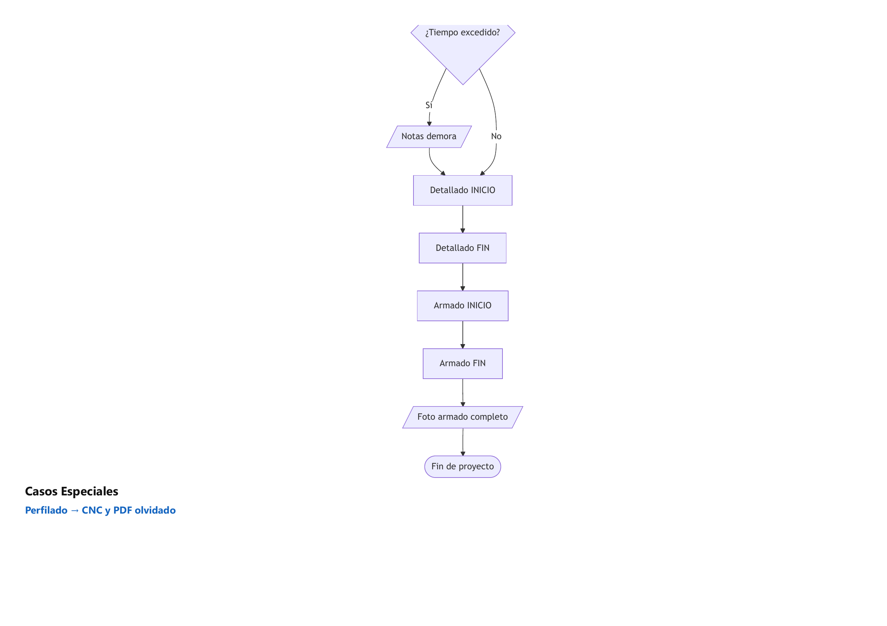
Fig. 2.4 — Taller (detallado, armado) y solicitud de cierre
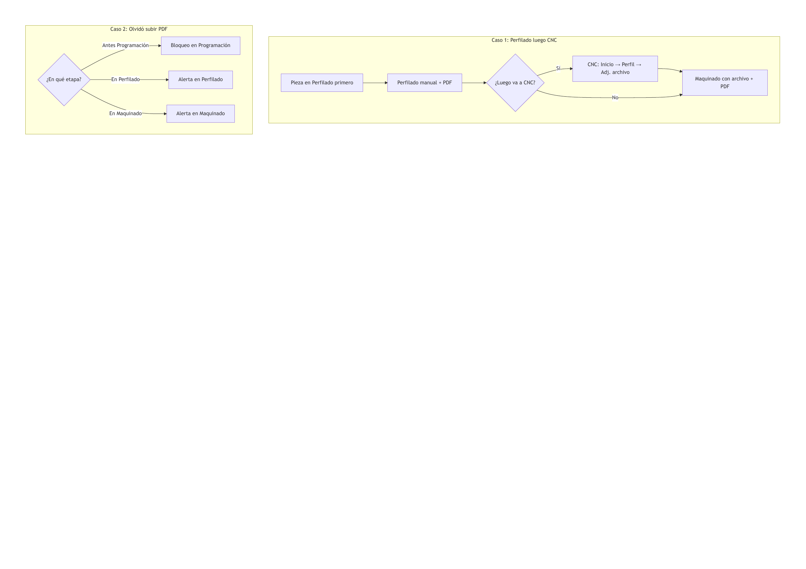
Fig. 2.5 — Casos especiales: perfilado, PDF faltante, tiempos
Consejo: Imprima o guarde estas láminas cerca del puesto de trabajo. Cuando un proyecto «se detiene», identifique en qué recuadro del diagrama está y qué rol debe actuar.
Rol: Diseñadora (Bodega)
3. Diseñadora
Usted elabora el diseño del proyecto, sube entregas (ZIP), registra tiempos, consulta prioridades y puede respaldar archivos en el Histórico (área «Diseño» en pantalla). No administra órdenes de compra ni aprueba entregas de otros.
3.1 Pantalla de inicio y navegación
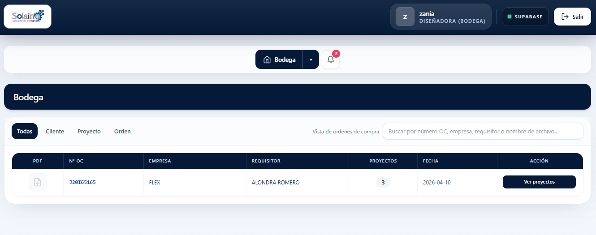
Fig. 3.1 — Vista inicial al entrar a Bodega
3.2 Clientes y proyectos
En Proyectos ve la lista de trabajos asignados. Filtre por cliente, folio o estado. Abra un proyecto para ver piezas, avance y archivos.
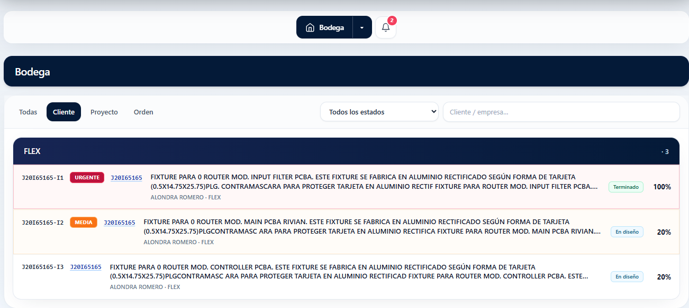
Fig. 3.2 — Catálogo de clientes vinculados a proyectos
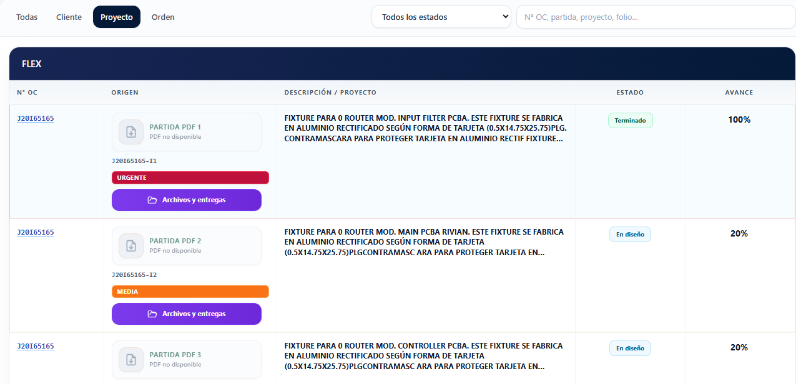
Fig. 3.3 — Listado de proyectos en curso
3.3 Prioridades y plan de trabajo
Prioridades muestra la cola global ordenada por urgencia (0 = más urgente). La campana de notificaciones avisa cuando el supervisor cambia la prioridad de un proyecto que le concierne.
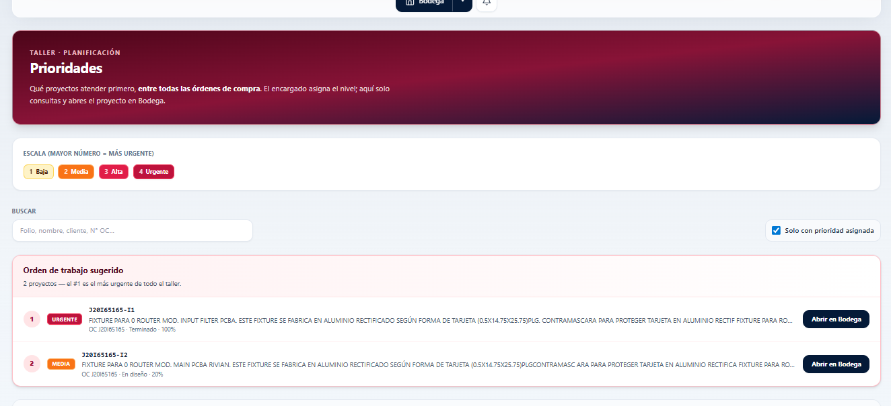
Fig. 3.4 — Cola de prioridadesFig. 3.5 — Notificación de cambio de prioridad
Plan de trabajo es el tablero semanal (lunes a viernes): metas, avance real y motivos de atraso. Usted puede consultarlo; la edición la hace el supervisor.
Fig. 3.6 — Plan de trabajo semanal
3.4 Archivos en la nube y entregas
En Nube consulta y sube archivos del flujo activo del proyecto. En la ficha del proyecto use Archivos y entregas para subir el ZIP de diseño (entrega versionada).
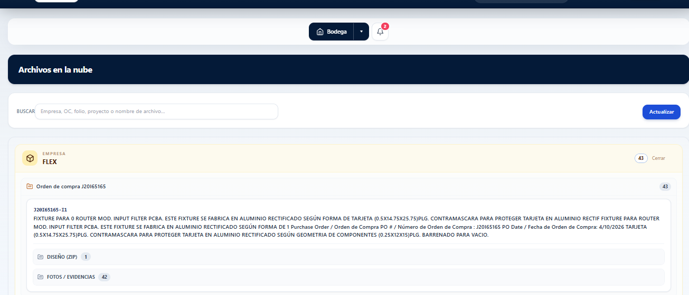
Fig. 3.7 — Archivos en la nube por proyectoFig. 3.8 — Subir entrega de diseño (ZIP)
3.5 Tiempos, avance y reportes
Registre tiempos de trabajo por orden o proyecto. El avance de tiempos alimenta los reportes del supervisor.
Fig. 3.9 — Registro de avance de tiemposFig. 3.10 — Detalle de tiempos de trabajoFig. 3.11 — Reportes de tiempos
3.6 Planos adicionales y notas
Si falta un plano PDF de una pieza, adjúntelo desde la ficha de la pieza. Use el historial de notas para dejar comentarios sin cambiar el avance.
Fig. 3.12 — Adjuntar plano adicional a una pieza
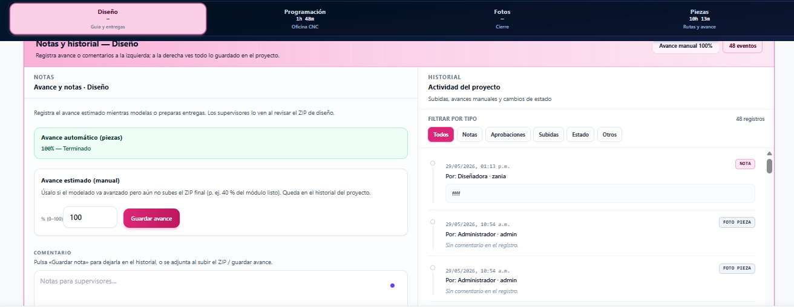
Fig. 3.13 — Notas en el historial del proyecto
3.7 Histórico (respaldo USB)
En Histórico puede indexar carpetas desde USB hacia la nube (área de diseño). No cierre sesión durante subidas masivas; el sistema refresca la sesión automáticamente.
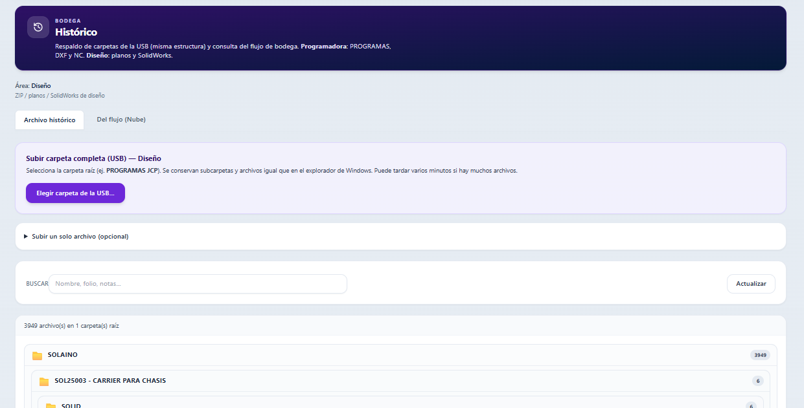
Fig. 3.14 — Explorador del históricoFig. 3.15 — Subir carpeta desde USB al histórico
3.8 Alertas habituales
Fig. 3.16 — Alerta cuando falta un PDF en una pieza
3.9 Flujo resumido — Diseñadora
flowchart TD
A[Abrir proyecto] --> B{Entrega lista?}
B -->|No| C[Trabajar diseño]
C --> D[Subir ZIP en Archivos y entregas]
D --> E[Registrar tiempos]
B -->|Sí| F[Esperar revisión supervisor]
F --> G{Aprobado?}
G -->|Cambios| C
G -->|Sí| H[Pasa a programación]
Rol: Programadora maquinaria
4. Programadora maquinaria
Usted recibe proyectos con diseño aprobado, asigna piezas, sube programación CNC, gestiona la cola de Maquinado y participa en Taller (armado, tiempos masivos). También consulta Prioridades, Plan de trabajo, Reportes e Histórico (área «Programadora» en pantalla).
4.1 Inicio y menú
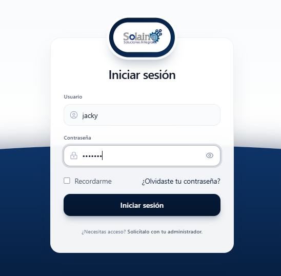
Fig. 4.1 — Vista inicial programadoraFig. 4.2 — Opciones disponibles en el menú Bodega
4.2 Proyectos, clientes y prioridades
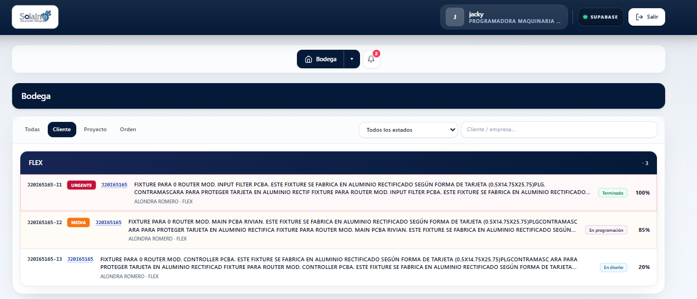
Fig. 4.3 — Clientes
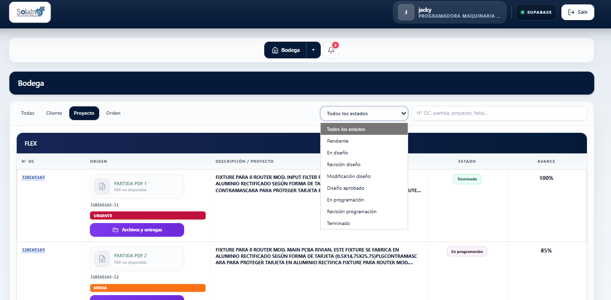
Fig. 4.4 — Proyectos asignados
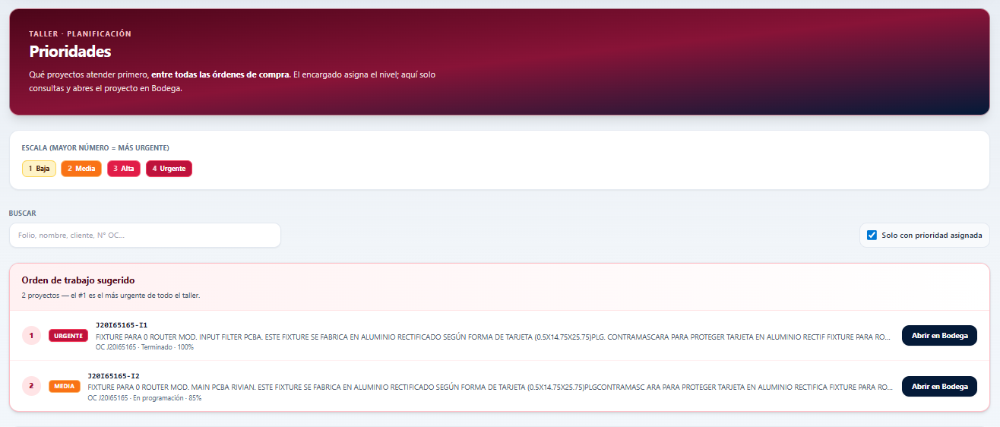
Fig. 4.5 — Cola de prioridadesFig. 4.6 — Plan de trabajo semanal
4.3 Orden de compra y piezas
Abra la orden vinculada al proyecto. Asigne piezas a programación y confirme la asignación antes de subir archivos CNC.
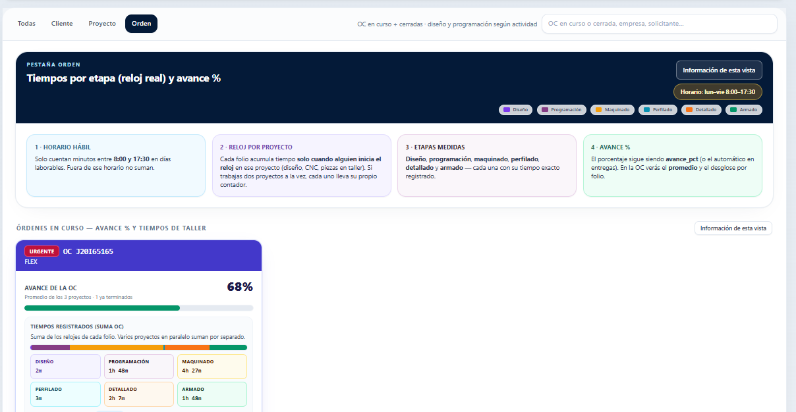
Fig. 4.7 — Detalle de orden de compraFig. 4.8 — Listado de órdenes de compraFig. 4.9 — Asignar piezas a programaciónFig. 4.10 — Confirmar asignación de piezas
4.4 Programación CNC
Registre tiempos de programación, suba el ZIP de maquinado y marque la etapa como terminada cuando corresponda.
Fig. 4.11 — Tiempos de programaciónFig. 4.12 — Tiempos reales vs. estimadosFig. 4.13 — Terminar etapa de programación
4.5 Nube e histórico
Fig. 4.14 — Archivos en la nubeFig. 4.15 — Histórico (respaldo programación)
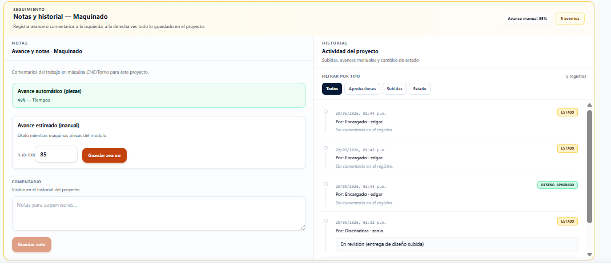
Fig. 4.16 — Notas en historial del proyecto
4.6 Maquinado
La vista Maquinado concentra piezas listas para CNC/Torno. Registre inicio y fin de maquinado por pieza o en lote.
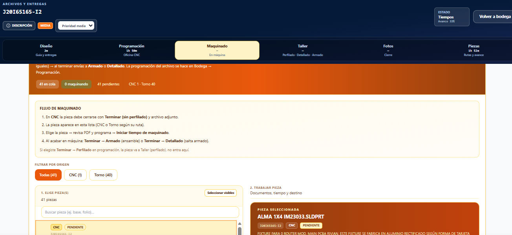
Fig. 4.17 — Cola de maquinadoFig. 4.18 — Terminación de maquinadoFig. 4.19 — Inicio masivo de piezasFig. 4.20 — Registro masivo de tiemposFig. 4.21 — Fin masivo en etapa detallado
4.7 Taller (perfilado, armado, detallado)
En Taller continúa el trabajo físico: perfilado, armado y detallado. Las capturas de esta subsección son las mismas que verá el operador de taller (capítulo 5).
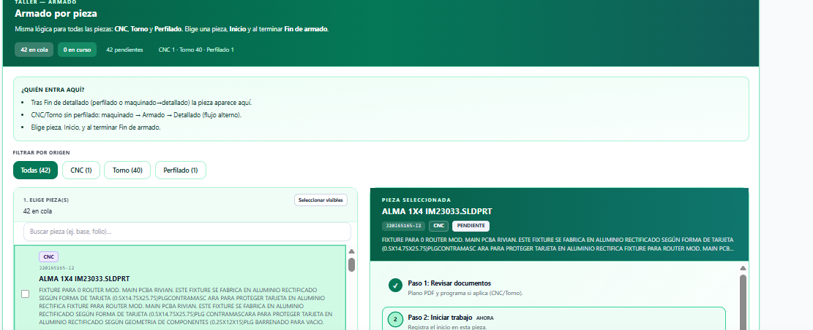
Fig. 4.22 — Trabajo en etapa de armadoFig. 4.23 — Finalizar armado
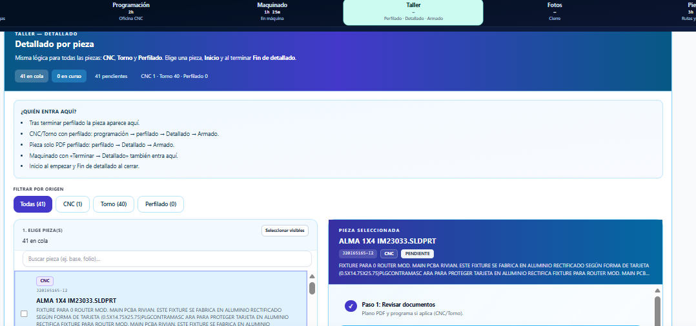
Fig. 4.24 — Detallado por pieza en tallerFig. 4.25 — Tiempos y piezas en tallerFig. 4.26 — Terminación de perfilado en tallerFig. 4.27 — Selección de tiempo aproximadoFig. 4.28 — Subir fotos de piezas terminadasFig. 4.29 — Solicitar cierre al supervisor
4.8 Reportes y alertas
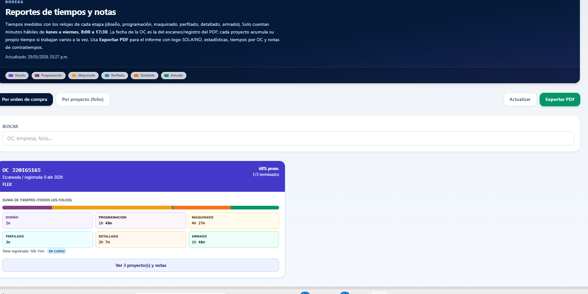
Fig. 4.30 — Reportes de tiemposFig. 4.31 — Notificaciones de cambio de prioridad / alertas
4.9 Flujo resumido — Programadora
flowchart TD
P[Proyecto aprobado] --> A[Asignar piezas]
A --> B[Programar CNC y subir ZIP]
B --> C[Terminar programación]
C --> D[Maquinado]
D --> E[Taller]
E --> F[Fotos]
F --> G[Solicitar cierre al supervisor]
Rol: Operador taller
5. Operador taller
Su rol se centra en la vista Taller: perfilado, armado y detallado de piezas. Consulta Prioridades y Plan de trabajo. No programa CNC ni administra histórico. Las pantallas de taller son las mismas que usa la programadora (desde la sección Taller en adelante).
5.1 Qué ve en el menú
Vista
Operador
Proyectos
Consulta y trabajo en piezas
Prioridades
Sí — cola global
Plan de trabajo
Solo lectura
Taller
Sí — trabajo principal
Maquinado
No (lo realiza programadora)
Histórico / Reportes
No
5.2 Prioridades
Revise la cola al inicio del turno. Atienda primero los proyectos con prioridad más alta (número menor).
Fig. 5.1 — Cola de prioridades (misma vista que programadora)
5.3 Trabajo en Taller
Abra el proyecto desde Taller o desde Proyectos. Registre tiempos al iniciar y terminar cada etapa.
5.3.1 Armado
Fig. 5.2 — Etapa de armadoFig. 5.3 — Finalizar armado
5.3.2 Detallado y tiempos por pieza
Fig. 5.4 — Detallado por piezaFig. 5.5 — Tiempos y listado de piezasFig. 5.6 — Terminación de perfilado
5.3.3 Registro masivo de tiempos
Cuando varias piezas comparten la misma operación, use inicio/fin masivo para ahorrar captura.
Fig. 5.7 — Inicio masivo de piezasFig. 5.8 — Tiempo masivoFig. 5.9 — Fin masivo en detalladoFig. 5.10 — Tiempo aproximado
5.4 Fotos y solicitud de cierre
Al terminar las piezas, coordine con programadora o supervisor para fotos y cierre formal del proyecto.
Fig. 5.11 — Fotos de piezas (referencia de pantalla compartida)Fig. 5.12 — Solicitar cierre al supervisor
5.5 Notas en el proyecto
Puede dejar notas en el historial del proyecto para comunicar incidencias al supervisor.
Fig. 5.13 — Notas en historial
5.6 Flujo resumido — Operador
flowchart TD
T[Inicio de turno] --> P[Revisar Prioridades]
P --> Q[Abrir proyecto en Taller]
Q --> R{Etapa?}
R -->|Perfilado| S[Registrar tiempos perfilado]
R -->|Armado| U[Registrar armado]
R -->|Detallado| V[Registrar detallado / masivo]
S & U & V --> W[Nota si hay incidencia]
W --> X[Coordinar fotos y cierre]
Rol: Supervisor / encargado (Bodega)
6. Supervisor (encargado)
Usted coordina el flujo completo: crea proyectos, adjunta OC, revisa diseños, confirma tratamientos, gestiona catálogos, sube referencias de diseño, administra histórico y cierra proyectos. Tiene los mismos poderes operativos que el administrador en Bodega, excepto Usuarios e Historial global de inventario.
6.1 Panel y opciones
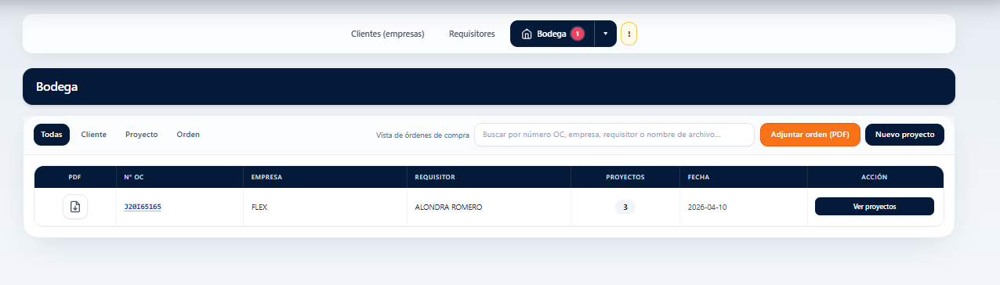
Fig. 6.1 — Acceso al módulo Bodega
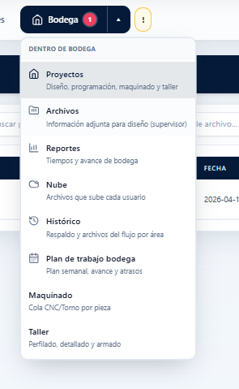
Fig. 6.2 — Opciones del menú disponibles
6.2 Catálogos: empresas, clientes y requisitores
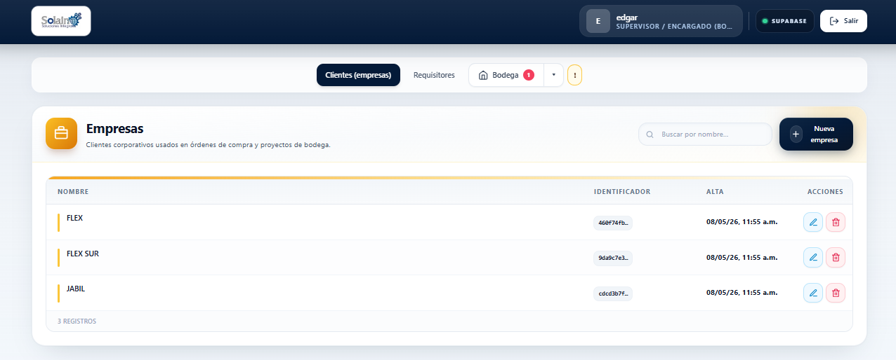
Fig. 6.3 — Catálogo de empresas
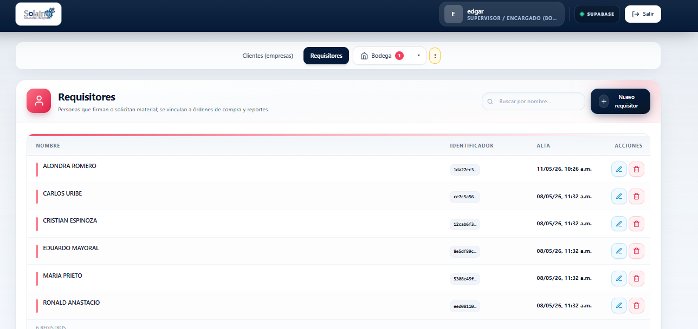
Fig. 6.4 — RequisitoresFig. 6.5 — Clientes y nivel de urgencia
6.3 Crear proyectos y órdenes de compra
Fig. 6.6 — Alta de nuevo proyecto
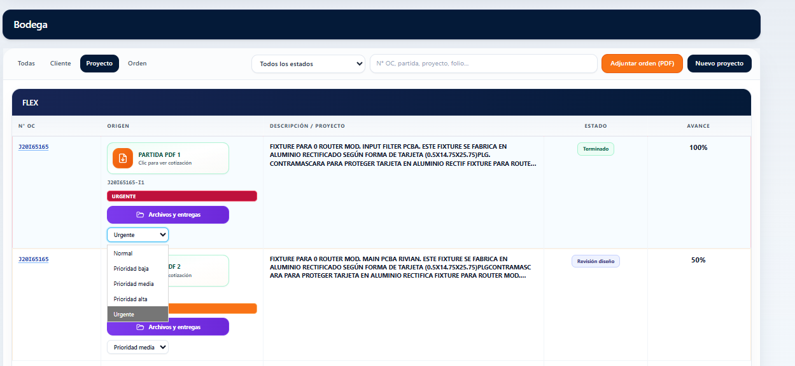
Fig. 6.7 — Listado de proyectos
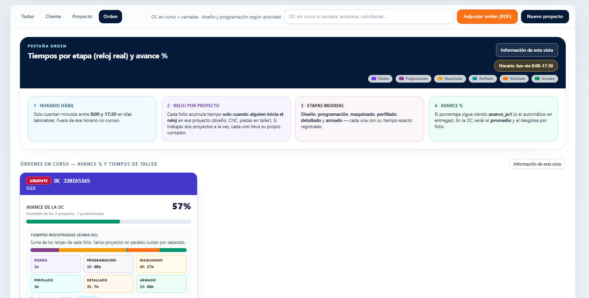
Fig. 6.8 — Detalle de orden de compraFig. 6.9 — Adjuntar PDF de la orden de compra
6.4 Revisión de diseño y tratamiento
Cuando la diseñadora sube una entrega, revísela. Puede aprobar, pedir cambios o registrar tratamiento especial.
Fig. 6.10 — Revisión de entrega de diseñoFig. 6.11 — Enviar información o referencia a diseñadoraFig. 6.12 — Revisión y tratamientoFig. 6.13 — Confirmar tratamientoFig. 6.14 — Notificación de entrega pendiente de revisión
6.5 Plan de trabajo y reportes
Fig. 6.15 — Edición del plan de trabajo semanal
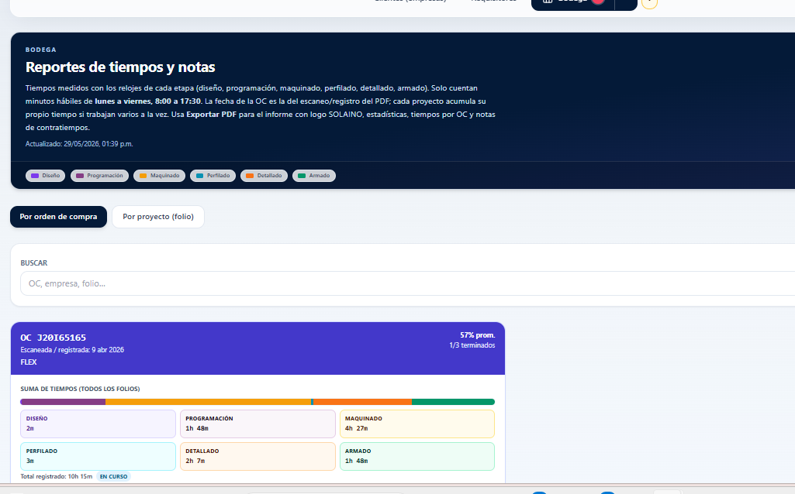
Fig. 6.16 — Reportes de tiempos y contratiempos
6.6 Nube e histórico
Fig. 6.17 — Archivos en la nube
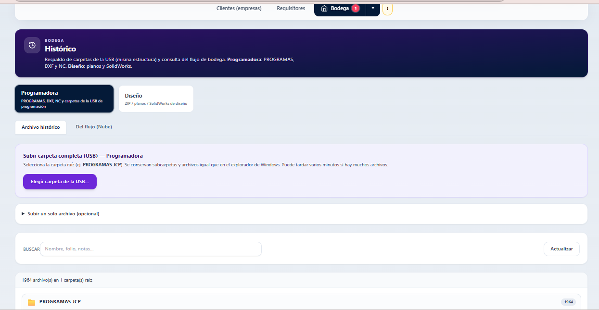
Fig. 6.18 — Histórico (ambas áreas: diseño y programación)
6.7 Flujo resumido — Supervisor
flowchart TD
N[Nuevo proyecto + OC] --> D[Diseñadora trabaja]
D --> R{Revisar entrega}
R -->|Cambios| D
R -->|OK| PR[Programación]
PR --> M[Maquinado / Taller]
M --> C[Cierre formal con fotos]
7. Diagramas y permisos por rol
7.1 Mapa de navegación por rol
flowchart TB
subgraph Enc["Encargado"]
E1[Proyectos OC]
E2[Archivos ref.]
E3[Histórico ambas áreas]
E4[Revisión diseño]
end
subgraph Dis["Diseñadora"]
D1[Entregas ZIP]
D2[Histórico Diseño]
D3[Prioridades]
end
subgraph Prog["Programadora"]
P1[Asignar piezas]
P2[Maquinado]
P3[Taller]
P4[Histórico Programadora]
end
subgraph Op["Operador"]
O1[Prioridades]
O2[Taller]
end
7.2 Matriz de permisos (Bodega)
Función
Encargado
Diseñadora
Programadora
Operador
Crear / editar proyectos
✓
—
—
—
Adjuntar PDF orden compra
✓
—
—
—
Revisar entregas diseño
✓
—
—
—
Subir entrega diseño (ZIP)
✓
✓
—
—
Asignar piezas / programación
✓
—
✓
—
Cola Maquinado
✓
—
✓
—
Vista Taller
✓
—
✓
✓
Prioridades (cola)
—
✓
✓
✓
Plan trabajo — editar
✓
ver
ver
ver
Reportes tiempos
✓
✓
✓
—
Histórico USB
✓ ambas
◐ diseño
◐ prog.
—
Cierre formal proyecto
✓
—
—
—
Notas en historial
✓
✓
✓
✓
✓ = permitido · ◐ = parcial (solo su área) · — = no disponible
7.3 Notificaciones
sequenceDiagram
actor Sup as Supervisor
participant App as SOLAINO
actor Op as Diseñadora / Prog. / Operador
Sup->>App: Cambia prioridad proyecto
App->>Op: Campana — notificación
Op->>App: Abre proyecto actualizado
8. Glosario y buenas prácticas
8.1 Términos
Término
Definición
OC
Orden de compra — documento PDF vinculado al proyecto
Folio
Identificador único del proyecto en bodega
Entrega
Conjunto de archivos (ZIP) de diseño o programación subidos al sistema
Nube
Archivos del flujo activo (no histórico)
Histórico
Respaldo indexado desde USB; áreas Diseño y Programadora
Prioridad 0–4
Urgencia del proyecto; 0 es la más alta
Perfilado / Armado / Detallado
Etapas de taller después del maquinado CNC
8.2 Buenas prácticas por rol
Diseñadora: suba entregas completas; registre tiempos el mismo día; adjunte PDFs faltantes de inmediato.
Programadora: confirme asignación antes de subir CNC; no deje piezas sin terminar programación en la cola de maquinado.
Operador: revise prioridades al inicio del turno; use registro masivo cuando aplique; deje notas claras ante contratiempos.
Supervisor: revise entregas en 24 h; mantenga OC y catálogos actualizados; cierre proyectos solo con fotos verificadas.
8.3 Seguridad
Una cuenta por persona; no comparta contraseña.
Cierre sesión en equipos compartidos.
Ante error de rol o permiso, contacte al administrador (no intente acceder por otra cuenta).